Long-time coder and a few other things too
Pull It Together is a multiplayer co-op exploration and resource management game. In it, up to four players have to work together to navigate through the wilderness and overcome its challenges, with the end goal of making it across the mountains to escape the approaching superstorm. However, they're not alone in this journey: they have their trusty wagon with them that can store loose items, hold onto tools, and equip powerful trinkets that provide boons to the players.
Made in Godot 4.6 with a team of three internal members and seven external artists on commission, I was the team's producer, audio lead, and a generalist developer. As producer, I was in charge of managing the internal team and handling most of the work outside of the engine. This involved scheduling and hosting meetings, preparing and enforcing the team's schedule, and setting up marketing materials like the Steam page. I also represented the team when talking to people who weren't directly working on the game, including external publishers and playtesters.
As audio lead, I leveraged my prior experience with working in game audio to manage our external composer and SFX designer. I gave them directions on how to create their assets and provdided feedback for further iteration on them. I was also in charge of implementing those assets into the game, creating a custom dynamic audio system with vertical layering and horizontal sequencing for music, and spatial one-shot sound effect playback for most diegetic sounds.
Lastly, as a generalist developer, I worked on a number of important underlying systems. My primary contributions were the aforementioned audio system, full controller support, accessibility features, and UI/UX programming. I ensured that the entire game was playable and all of the menus were navigable with just a controller, refactoring some less compatible systems to work with a controller as needed. For the accessibility features, many were designed and planned from the start of the development to allow for as many people as possible to enjoy the game. This includes the ability to change the glow color of looked-at objects, input remapping, and options for people who struggle to hold down inputs for extended amounts of time. I also created the graybox and functionality for most UI elements, including the pause, title, and options menus, as well as the health and energy bars. I also made minor contributions and bugfixes to a variety of systems throughout the game, including the health/energy systems, the status effect system, and the global ping system.
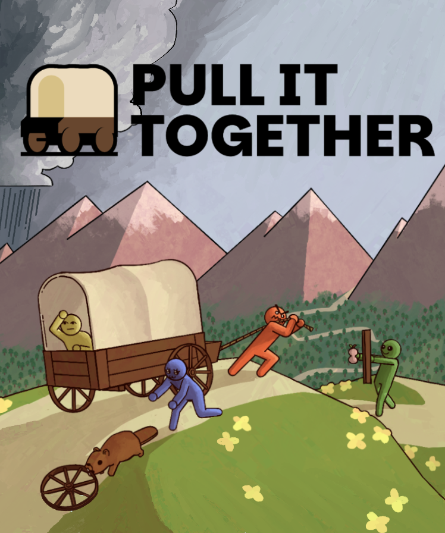
Bait & Tackle is a fishing themed boss rush where sometimes, the fish fight back. Armed with only your fishing rod, which also functions as a grappling hook and weapon, you explore new areas in search of the one that got away from you 30 years ago. The game is available for free on Steam and itch.io, and is actively recieving updates to address bugs and add new content.
Made in Godot 4.4.1 with a team of 10, my main roles are lead programmer and systems developer. Among other things, I created the universal boss class, which has numerous functions and variables needed by all bosses to streamline boss development, as well as the "Fishdex" system, which stores and displays information on every fish that the player has caught. I was also the main bugfixer, tasked with figuring out the cause of any bugs that were found in the game, and subsequently fixing them.
Additionally, I worked as the game's music composer, creating 30 total minutes of original music for the game's areas and bosses. I made a custom audio system that loops music seamlessly and applies effects like fade-out and pitch changes when necessary, and managed the soundtrack's release on all of its available platforms.
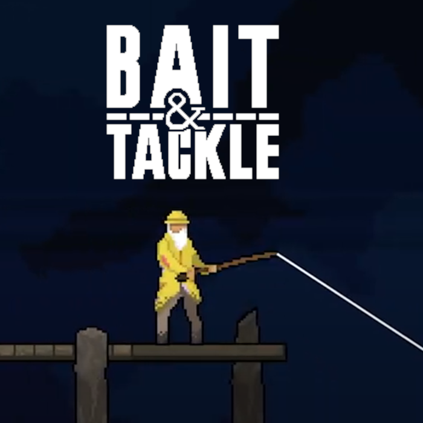
For my summer 2023 co-op, I contributed to the joined the development of Changeling, a virtual reality adventure/mystery game made in Unreal Engine, as a part of the project's first "Under the Hood" team. This team had a variety of tasks to perform, such as developing core mechanics, assisting teams that needed help with their tasks, and debugging and optimizing the game's code. I was also a part of a one-sprint team devoted to the Mother's Level - which was underdeveloped compared to the other levels - to quickly bring it to the quality of the rest of the game.
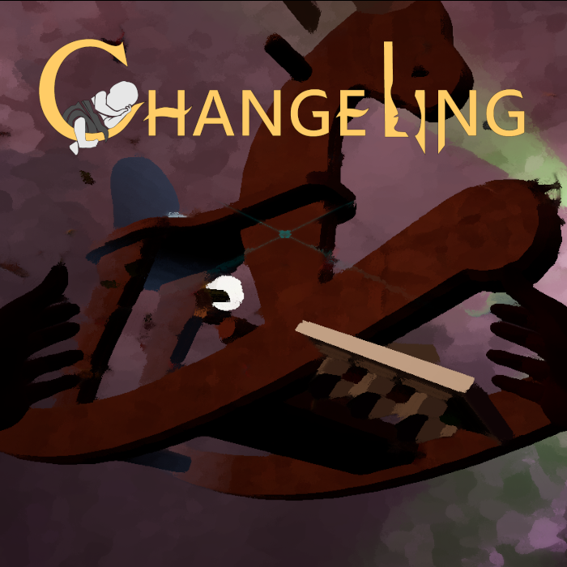
An idle game, made in Unity with four teammates for for the RIT Game Development Club's Fall 2023 Game Jam. You are a humble pumpkin farmer, yet you can't find peace as the local wildlife keeps snacking on your crops. You set out to rectify this issue by automating the process with better farming methods, including summoning the undead. I was in charge of the planting/harvesting system, the farmer and harvester upgrades, and general programming assitance and debugging.
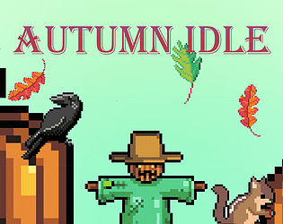
An action game, made in the Godot engine in a team of 5 for the the RIT Game Development Club's Spring 2024 Game Jam. You are the Starcher, an interstellar archer trying to explore the cosmos. However, you are constantly being pursued by a horde of galactic threats, and moving to the next galaxy takes a lot of energy. You must snipe enemies to siphon their energy, and they may also drop powerups to improve your odds at survival. For this project, I was in charge of creating the powerups, general bugfixing, and implementing some minor particle effects. I also took a mentorship role for my team, as I was the only one with experience using Godot at the start of this project, and helped familiarize the rest of my team with the engine.
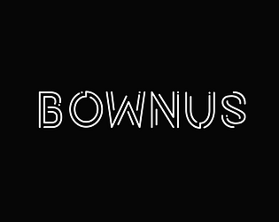
An action/resource management game, made in Unity in a team of 3 for the RIT Game Development Club's Fall 2022 Game Jam. Taking the role of Riff the farmer, your quick-growing and quick-withering crops are under attack by zombies. You have to quickly plant, water, and harvest crops with the respective tools, all while fending off the zombies and keeping your equipment organized. Your score at the end of the night is based on how many crops you harvested, as well as the quality of those crops. My roles for this project included creating the player controls, creating the item framework, and balancing the crop scoring.
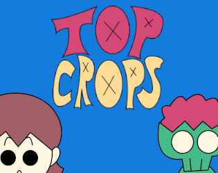
This course revolved around the prototyping process, and had us rotate teams every three weeks to make a quick prototype of a theoretical game with specific limitations. As such, these are smaller projects that represent what a game could be, instead of being full games in their own right.
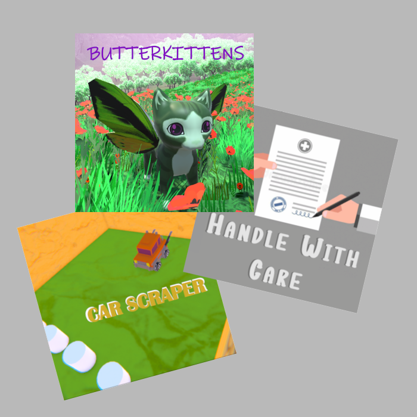
A two-player co-op dungeon-crawler made in Unity with a team of 4, created for my Game development Processes class. Player 1, the knight, plays like a traditional dungeon-crawler, with 2D top-down movement and an attack. The knight also has to defeat enemies to gain levels, which gives them more health and stronger attacks. Player 2, the mentor spirit, instead plays like a deck builder, being able to use cards that the knight picks up. These cards have a variety of effects, such as giving one of the players a powerup, or spawning additional enemies for the knight to gain experience. The spirit can also interact with the environment by temporarily immobilizing enemies and grabbing certain objects. I was the lead programmer on this project, creating systems like the cards and puzzles, and created with the spider and Big Blue Crab enemies. I also created and enforced GitHub repository standards, such as creating detailed pull requests and requiring code reviews before merging branches. (Password for the itch page is "double-dungeon")
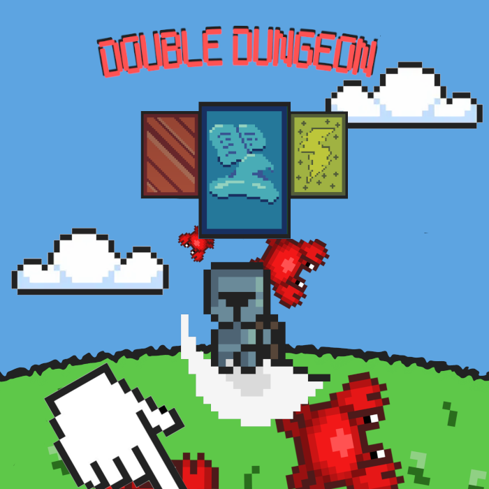
A project made for the Game Modification class as part of the "Gen Z Doom" team, this is a custom map for Doom II taking inspiration from Dante's Divine Comedy. You drop into the city of Dis, where you meet Dante and Virgil and explore the bottom layers of Hell, culminating in a fight against Satan. I was in charge of implmenting the custom weapons and tools, creating the base NPC class, and general bugfixing as needed.
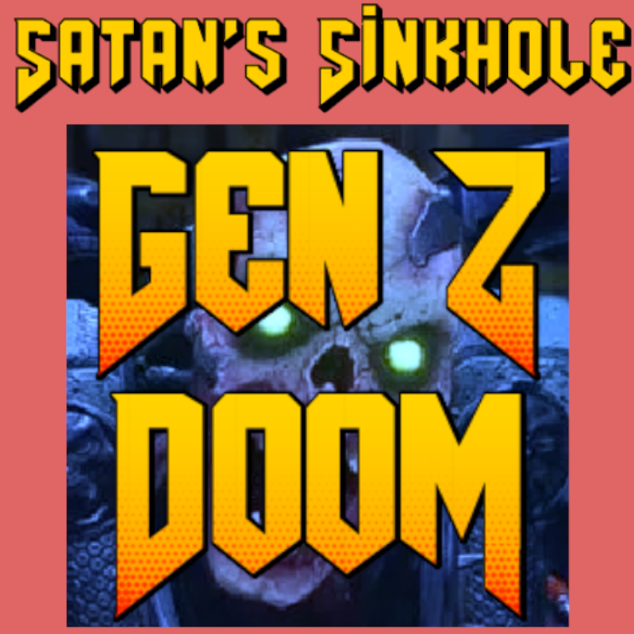
This class revolved around the online tool Observable, which uses the D3.js JavaScript extension to generate different forms of data visualization. It also taught good data visualization practices, such as how to gather and filter good data, when to use different types of graphs, and how to make visualizations as user-friendly as possible.
IGME 235 and IGME 330 were two courses centered around web development. The former centered around web development basics, like introductory HTML/CSS/JavaScript and external APIs. The latter covered more advanced topics, like using multiple JavaScript plugins at once and transpiling between languages. The IGME 235 page can be found here, and the IGME 330 page can be found here.
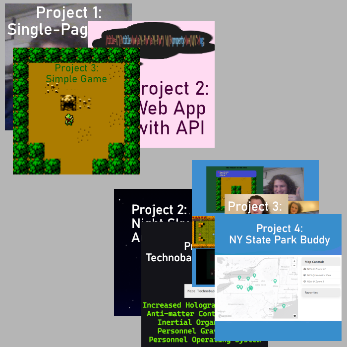
A small project created for my 3D Animation and Asset Production final, made in Unity. You wander a building and progress from room to room, with subsequent rooms getting more decorated. Each of these rooms also have a unique sign, which provides "banter" and a bit of worldbuilding. The signs' text changes from room to room, with some having different branching dialogue based on the path that you enter, and each playthrough generates new signs with new text.
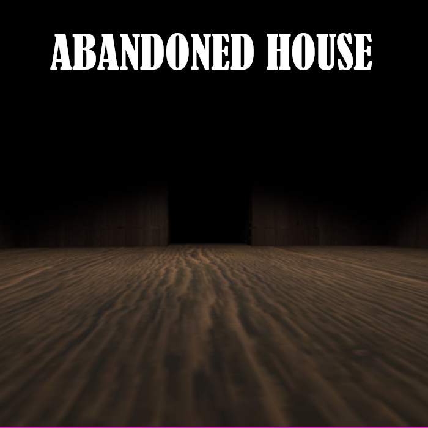
A MonoGame project, made in a group of four for the Game Development & Algorithm Problem Solving II class. You play as a snake wielding a crossbow and need to go through an endless dungeon, but the catch is that you only have one arrow and must pick it up again after use. For this project, I made the player controls (moving, firing the crossbow, and dodging), enemy behaviors, health pickups, and the optional difficulty mode.
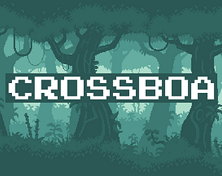